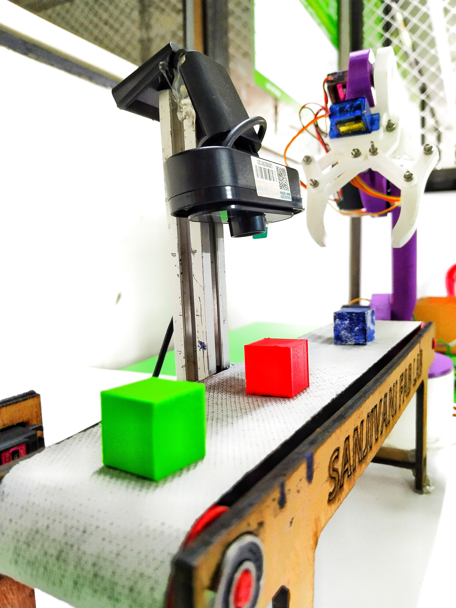
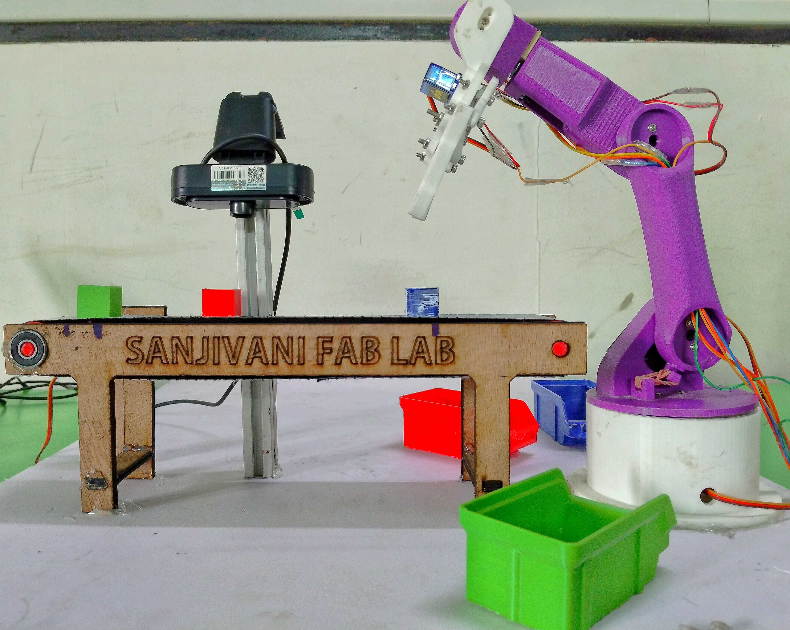
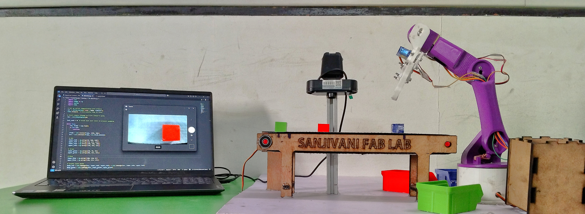

Object Sorting with Robotic Arm
An advanced 6-axis servo robotic arm system integrated with computer vision to automatically detect, classify, and sort objects by color and size in real-time. Designed to optimize industrial logistics.
System_Specs
System Links
01_Mechanical_Design
The robot utilizes a 6-axis structure created using SolidWorks and printed with a 0.2mm layer resolution. Components such as base, articulated joints, gear linkages, and the gripper were modularized for precision assembly.

// Assembly_Breakdown
Full assembly showcasing the 3D-printed body along with the high-torque servos used for base rotation and arm lifting mechanisms. Designed for fluid 6DOF movement.
02_Electronics_&_PCB
A custom-milled PCB routes power and PWM signals from an ESP32-C3 microcontroller. Toolpaths were generated with Mods CE and fabricated on a CNC milling machine.

03_CV_&_Firmware
OpenCV Integration
Python processes the live webcam feed, generating HSV color masks to detect objects on the conveyor. It classifies red, green, or blue objects by counting non-zero pixels inside thresholds and sending the ID to the microcontroller via Serial.

The ESP32 firmware utilizes coordinate mapping for inverse kinematics, directing each servo sequentially to perform smooth "pick and place" actions triggered by the computer vision backend. Defaulter checks prevent system congestion.